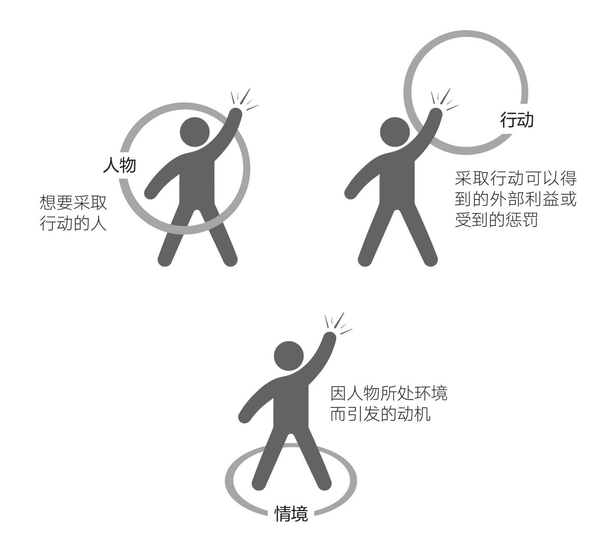
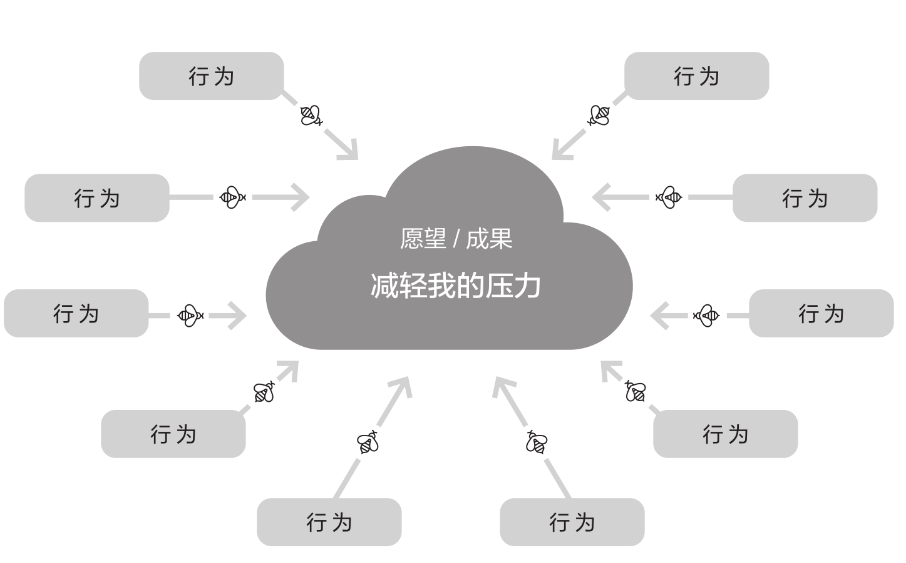
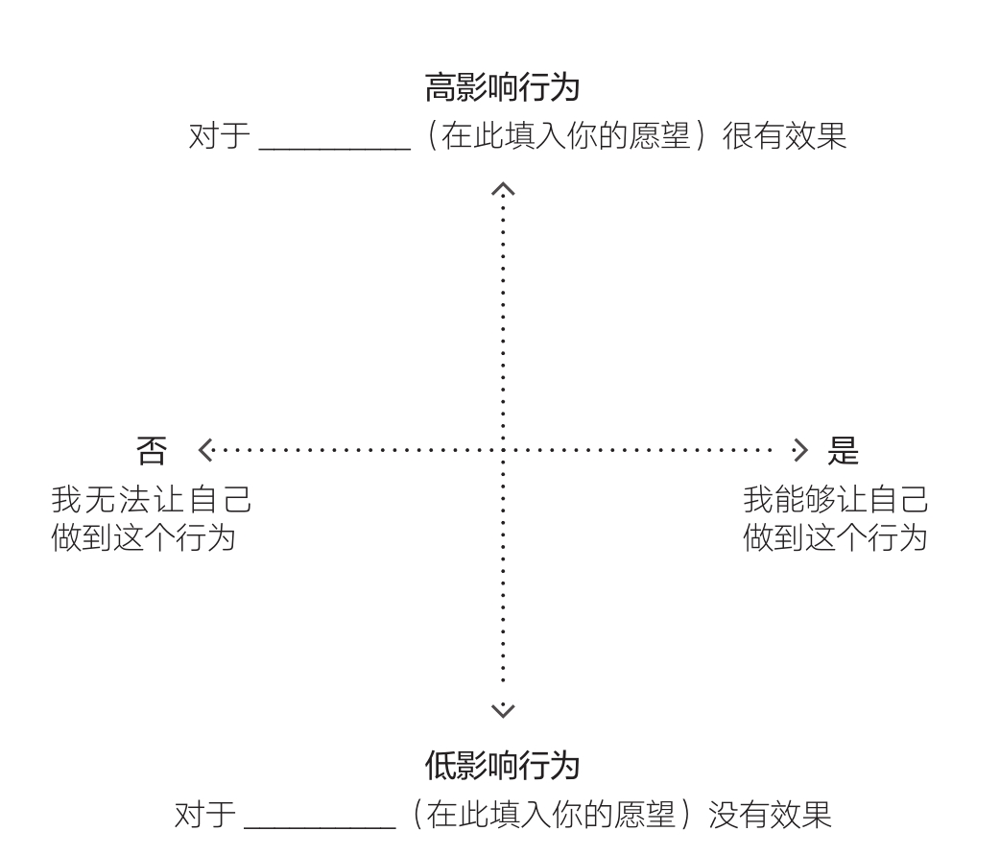

02 · 别信那只猴子——动机为什么靠不住
01.md 结尾我们留了一个结论：行为 = 动机 × 能力 × 提示。缺一个，行为就不会发生。
你说你想早睡早起，动机足够，但缺提示、惯常程度不匹配。你说你拍短视频，动机推动了你开始，但没坚持住。
这章就是为你写的。福格把动机研究透了，结论就一句话：动机是个靠不住的队友。 不是因为你不自律，是它本身就那样。
动机猴子的真面目
福格给动机起了个外号——动机猴子。这只猴子有几个特征：
- 很复杂。 同一个行为背后可能有三股动机来源：你自己想做的（人物）、行为带来的利益或惩罚（行动）、环境在推你还是拉你（情境）。福格管这个叫 PAC 模型——人物（Person）、行动（Action）、情境（Context）。这三股力有时候互相打架——你想瘦，但也想吃蛋糕。不是意志力弱，是两股动机在拔河。

福格行为模型里的动机不是单一的"我想做"。看看上面这张图，同一个人面对同一个行为，动机可能同时来自三个方向。比如你想去健身房——可能是你真心想变健康（人物），也可能是因为不去会被教练催（行动），或者朋友圈所有人都在晒健身照（情境）。任何一个方向弱了，整体动机就掉。
-
冲到顶峰后迅速回落。 这就是动机波浪。看了一个励志视频冲上去，三天后躺在沙发上。每年上亿人买在线课程，最终结业不到 10%。你买过的按摩器、榨汁机，用过几次？不是你有问题，是你被动机波浪打了，所有人都被打。
-
波动频繁到每分钟都在变。 一天之中，越晚意志力越薄。到了周五晚上，自我提升的动机约等于零。有些波动可预测（一月减肥的动机最高），有些不可预测（朋友突然说不去看演唱会，你也不想去了）。
-
追逐抽象概念时完全没用。 "我想更健康"——然后呢？海报上写着"吃掉彩虹"，但你知道要吃多少绿的、多少红的吗？愿望是好的，但愿望不是行为。你不缺愿望，你缺的是具体到"现在就能做"的那个动作。
-
光靠动机不可能长期改变。 假设有人给你 100 万美元让你瞬间把血糖降到正常——能做到吗？不能。不是钱不够多，是你身体做不到。动机再强，跨不过能力的坎。同理，动机再强，没有提示你也不会做。
愿望、成果、行为——这三个词你必须分清
你在 01 篇里说的"想早睡早起"——这是什么？福格说这叫愿望，不是行为。
愿望和成果都很好，但它们是终点，不是路径。行为是你现在或在某个特定时刻可以去做的事情。关掉手机、在床边放一本书、把闹钟放到另一个房间——这些是行为。你无法"今晚就改善睡眠质量"，但你可以今晚做一个具体动作。
福格参与过一个银行项目。银行想让客户存 500 美元应急金。"存 500 美元"——听起来很具体了吧？不，这是成果，不是行为。团队列出 30 多个行为，比如"每天晚上把零钱放入存钱罐"、"致电有线电视公司降套餐"。存 500 是终点，每天放零钱是路径。
你的情况也一样。早睡早起是成果。你需要的是找到一个具体行为，能推着你在那个方向走。福格的方法叫行为集群 + 焦点地图。
行为集群：先发散，不评判
拿出一张纸。中间写你的愿望，比如"减轻压力"或"坚持运动"。然后问自己："如果有一根魔法棒，让我能做任何有助于这件事的事，我会做什么？"
关键：不评判。什么乱七八糟的都写。搬到毛伊岛？写上。每天做按摩？写上。带狗上班？写上。每想出一个，问自己"还有呢？"——直到想不出来为止。
福格管这叫挥舞魔法棒。这一步只求数量，不求质量。因为你凭直觉选的那个行为（"每天跑步 5 公里"），大概率是错的。为什么？下一节说。

上图就是行为集群的样子。中间的云朵是愿望，周围每一个框是一个可能的具体行为。注意——现在不筛选，不评判。有的行为很怪（"搬到毛伊岛"），有的很普通（"每天散步 10 分钟"），全部写进去。数量比质量重要。
三个最常见的坑
坑 1：靠猜。 堵车时看到有人骑自行车穿过车流，你觉得"这才是最好的通勤方式"。买了一堆装备，第二天降温下雨，全身湿透。你在赌轮盘。
坑 2：看网红推荐。 冥想大师说他每天冥想 30 分钟改变了人生。你试了两天，太无聊了，放弃。他不是你，他的黄金行为未必是你的。
坑 3：照搬朋友。 朋友说每天四点半起床改变了他的人生。你也试。一周后睡眠不足，脾气暴躁。你的身体和他的身体不是同一个身体。
这三个坑有一个共同点：全凭动机做决定。 而动机是猴子。
焦点地图：用两个问题找出你的黄金行为
福格发明了一个叫焦点地图的工具，两回合出结果。

第一回合：只看影响。 把行为集群里每一个行为问一遍："这个行为对我实现愿望有多大的帮助？"高的放上面，低的放下面。不用考虑能不能做到，先看效果。
第二回合：只看可行性。 问自己："我能让自己做到吗？"能做的往右边挪，做不了的往左边。
右上角的就是你的黄金行为——影响大、你又能做到的。福格说了一句非常重要的话：
"持久改变的关键，在于为自己匹配真心想做的行为。"——福格原则 1：帮助人们做他们已经想做的事。
不是你应该做的，是你已经想做的。你上次说拍短视频——你当时是真的想做，不是"应该做"。那就是黄金行为。它后来断了，不是因为动机不够（你一开始动机很强），是因为没有建立可靠的提示和足够低的能力门槛。
这是下一章的内容。这一章先把一件事刻进脑子里：别再信任你的动机去做长期坚持。它会骗你。选一个你本来就想做、小到不可能失败的行为，然后让提示和能力帮你守门。
这一章的核心，三句话
- 动机猴子有五个陷阱：复杂、回落快、波动频繁、对抽象目标没用、无法独立维持长期改变。 不是你的意志力有问题，是动机的物理属性决定了它靠不住。
- 区分愿望、成果和行为。 你缺的不是愿望，是具体到"现在就能做"的行为。用行为集群 + 焦点地图找到你的黄金行为。
- 福格原则 1：帮自己做自己已经想做的事。 别做"应该做"的，做"想做"的。然后把行为缩到小得不可能失败。
学习反馈
在飞书中回复本条消息，填写你的答复。